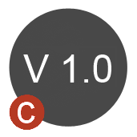

About
the Version Tool:
The Version tool can be embedded into other macros to allow checking of the version against an XML file stored on the web.
Configuration Properties:
There are 3 configuration properties to the tool:
The URL to the version XML file.
The current version of the macro that the tool is placed in.
A check box to enable the end user to check their macro is up to date.
Version History:
Version 1.0 - Initial release.
Version 1.1 - Added Tool Container to Disable tools and a check box to enable them.
Version 2.0 - Updated to Alteryx 9.0 macro interface.
___________________________________________________________________________________
www.ChaosReignsWithin.com